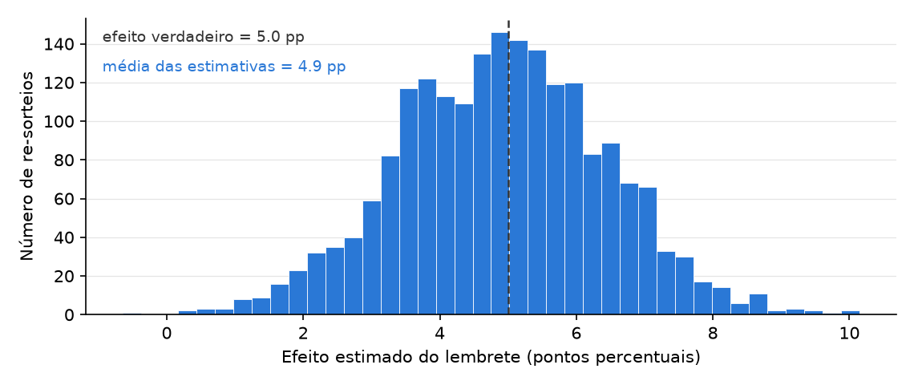
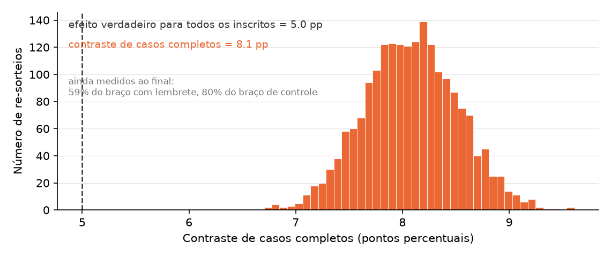

15 Pesquisa Causal Experimental
Este capítulo faz parte de um livro em desenvolvimento ativo e ainda não passou pela revisão do autor. O conteúdo pode mudar conforme a revisão avança.

A decisão de pesquisa. Decida se a forma como o tratamento foi atribuído no seu estudo permite ler uma simples diferença de desfechos como uma causa e, depois, nomeie exatamente qual quantidade essa diferença estima e de quem é o efeito. Ninguém além de você pode confirmar como as suas unidades foram separadas, então nenhuma ferramenta tem o direito de declarar que o seu desenho prova causa.
15.1 Por que essa decisão importa
A decisão em jogo: se a sua diferença de desfechos conquistou a palavra “porque”, e de quem é o efeito que essa diferença de fato descreve.
“Todo mundo me mostra que o grupo tratado foi melhor. Também foram melhor os pacientes que já começaram mais saudáveis, ou mais organizados, ou mais jovens. ‘Melhor depois do tratamento’ não é ‘o tratamento funcionou’. Me mostre que foi o acaso, e não o tipo de paciente, que decidiu quem foi tratado, e me diga exatamente por quem o seu número fala.” — uma revisora de ensaios clínicos, lendo uma alegação de que um novo lembrete melhorou a adesão à medicação
Uma alegação causal é a coisa mais difícil que você vai afirmar neste livro. Hoje uma ferramenta limpa os seus dados, roda a comparação e entrega um número confiante em segundos. Essa velocidade é o perigo. Se você colar de volta “o tratamento funcionou”, assinou o seu nome embaixo de uma alegação que não conquistou. A revisora acima não liga para o quanto a saída soou fluente. Ela liga para como o tratamento foi atribuído e para quem o número descreve. Este capítulo dá o único movimento que conquista a palavra porque, e a disciplina de dizer a quem ela se aplica.
15.2 O conceito
Comece por uma pergunta causal, uma pergunta sobre o que mudaria se você interviesse, e não sobre o que apenas anda junto. Exemplo: “uma mensagem de lembrete aumenta a fatia de pacientes que renovam a receita no prazo?”, não “pacientes que receberam lembretes renovam mais?”.
Para uma unidade, uma paciente, escreva dois números. O resultado potencial Y(1) é o que essa unidade mostraria com o tratamento. Exemplo: se a Sra. R renova no prazo caso receba as mensagens. O resultado potencial Y(0) é o que a mesma unidade mostraria sem ele. Exemplo: se essa mesma Sra. R renova caso não receba nada. O efeito causal para ela é Y(1) menos Y(0). Agora a regra que governa o campo inteiro, o problema fundamental da inferência causal: para qualquer unidade você só chega a ver um desses dois números. A Sra. R recebeu as mensagens ou não recebeu, nunca as duas coisas, então o efeito individual dela é irrecuperável.
Por isso você desiste do individual e persegue a média. O efeito médio do tratamento (ATE, de average treatment effect) é a média de Y(1) menos Y(0) entre todas as suas unidades, o efeito típico em vez do efeito de uma unidade qualquer. Exemplo: em média, o lembrete aumentou em alguns pontos as renovações no prazo. Um único movimento destrava uma estimativa honesta dele. A atribuição aleatória deixa o puro acaso, um cara ou coroa, decidir quais unidades são tratadas. Exemplo: um computador joga uma moeda justa para cada paciente. O acaso não sabe nada sobre saúde ou organização, então os dois grupos que ele forma são parecidos em média, e o desfecho do grupo não tratado representa honestamente o que o grupo tratado teria feito sem tratamento. É isso que a atribuição aleatória derrota: um confundidor, uma terceira característica que empurra tanto quem é tratado quanto o desfecho. Exemplo: pacientes mais organizados já renovam de qualquer jeito e são mais fáceis de recrutar, então um lembrete parece eficaz mesmo sem ter feito nada. Randomizar quebra a ligação entre qualquer característica e quem é tratado, e essa ligação quebrada é a razão inteira pela qual um experimento pode dizer porque.
15.3 Um exemplo trabalhado
Você comanda uma clínica e quer saber se uma mensagem diária de lembrete aumenta a fatia de pacientes com hipertensão que renovam no prazo a receita do remédio de pressão. Você recruta 800 pacientes e deixa um computador jogar uma moeda justa para cada um: 400 para o braço do lembrete (o tratamento), 400 para um braço de controle sem mensagens.
Para a Sra. R, Y(1) é se ela renova caso receba as mensagens, e Y(0) é se ela renova caso não receba nada. Você só vai chegar a ver um dos dois. Entre as 800, você estima o ATE como a diferença nas taxas de renovação no prazo entre os braços. Digamos que o braço do lembrete renove a 71 por cento e o de controle a 62 por cento, uma distância de 9 pontos percentuais. Como foi a moeda, e não a organização da paciente, que separou os braços, esses 9 pontos são uma estimativa honesta do efeito médio do lembrete.
Agora o teste de honestidade. Suponha que alguns pacientes tenham parado de responder antes da medição final. Atrito é o desfecho de uma unidade sumir depois da atribuição. Exemplo: pacientes que trocam de telefone, se mudam ou abandonam em silêncio, e cuja taxa final de renovação nunca é registrada.
Aqui está a parte que derruba muita gente. É tentador dizer que a distância de 9 pontos agora descreve “os pacientes que ficaram”. Cuidado com essa frase. Quando o próprio tratamento pode mudar quem fica, o braço do lembrete mostra pacientes que ficaram com lembretes e o braço de controle mostra pacientes que ficaram sem eles, e esses dois grupos observados não precisam ser o mesmo tipo de gente. A diferença entre eles é um contraste de casos completos, uma comparação de quem por acaso foi medido em cada braço. Um efeito para algum grupo comum de permanecentes pode muito bem existir como ideia, mas este contraste não o entrega sem suposições que você teria de enunciar e defender.
Quando é que o contraste engana de verdade? Não simplesmente porque gente saiu, e não simplesmente porque os braços perderam frações diferentes. O estrago vem quando quem sai está amarrado a qual seria o seu desfecho. Se o braço do lembrete perde os pacientes mais graves, a média de quem sobra sobe por razões que nada têm a ver com o lembrete funcionar. Retenção desigual entre braços é uma luz de alerta que vale relatar sempre, mas é só uma luz de alerta: braços podem perder frações diferentes de pacientes parecidos com pouco dano, e perder frações idênticas de pacientes muito diferentes com dano enorme. As taxas sozinhas não condenam nem absolvem; elas dizem onde cavar.
Então relate a retenção por braço primeiro, antes de qualquer efeito, e depois faça a pergunta de sensibilidade que um estranho fará a você: quão ruins os desfechos que faltam teriam de ser para mudar a conclusão? Exemplo: suponha que um quarto do braço do lembrete ficou sem medição. Se esses pacientes renovariam a apenas 50 por cento, a média verdadeira do braço é 0,75 × 71 + 0,25 × 50, cerca de 66, e a distância de 9 pontos encolhe para cerca de 4. Se eles se parecem com os pacientes que você mediu, a distância segura nos 9. Trabalhar dois ou três desses “e se” diz se o seu achado sobrevive a um pessimismo honesto, e essa faixa pertence ao texto final.
O atrito tem dois irmãos que o laboratório treina. Não conformidade é quando unidades atribuídas nunca tomam o tratamento, como pacientes que trocaram de número e nunca receberam mensagem. Transbordamento é quando o tratamento chega ao braço de controle, como um paciente que recebeu as mensagens lembrando um amigo não tratado. Cada um deles deixa o sorteio intacto e ainda assim muda qual quantidade o seu número descreve. Nomear essa quantidade é a decisão que este capítulo prepara.
15.4 Uma simulação com semente
A aleatorização é uma promessa sobre o procedimento: atribua o tratamento por sorteio, e a diferença de médias fica certa em média, com uma oscilação que você pode quantificar. O código abaixo mantém essa promessa visível. Ele dá a 200 pacientes as suas duas taxas potenciais de renovação de receita — sem lembrete, e com um lembrete que de fato acrescenta 5 pontos percentuais — e então refaz o sorteio da atribuição 2.000 vezes, registrando a estimativa que cada atribuição teria produzido. A semente faz cada execução reproduzir exatamente esta figura.
import numpy as np
import matplotlib.pyplot as plt
SEED = 464
rng = np.random.default_rng(SEED)
n, tau = 200, 5.0 # efeito verdadeiro: +5 pontos
y0 = np.clip(rng.normal(70, 12, n), 20, 95) # taxa de renovação sem lembrete
y1 = y0 + tau # exatamente +5 para cada paciente
estimativas = []
for _ in range(2000):
tratados = rng.permutation(n) < n // 2 # um novo sorteio da atribuição
estimativas.append(y1[tratados].mean() - y0[~tratados].mean())
estimativas = np.array(estimativas)
fig, ax = plt.subplots(figsize=(7.6, 3.2))
ax.hist(estimativas, bins=40, color="#2a78d6", edgecolor="white", lw=.4)
ax.axvline(tau, color="#333333", ls="--", lw=1.2)
ax.text(.02, .92, f"efeito verdadeiro = {tau:.1f} pp", color="#333333",
fontsize=9, transform=ax.transAxes)
ax.text(.02, .82, f"média das estimativas = {estimativas.mean():.1f} pp",
color="#2a78d6", fontsize=9, transform=ax.transAxes)
ax.set_xlabel("Efeito estimado do lembrete (pontos percentuais)")
ax.set_ylabel("Número de re-sorteios")
plt.show()
O histograma é a distribuição de aleatorização: cada estimativa que este mesmo experimento poderia ter produzido sob outro sorteio. Ele se centra quase exatamente na verdade (média das estimativas 5,0 contra 5,0 verdadeiro), que é a promessa do “certo em média”, cumprida e visível. Mas a maioria das execuções caiu entre cerca de 2 e 8 pontos, e os extremos foram de abaixo de zero a acima de 10. O seu único experimento realizado é um único sorteio deste histograma, e esse espalhamento é a incerteza que um relato honesto precisa carregar ao lado da estimativa. No notebook companheiro, dobre n e veja o histograma estreitar: tamanho de amostra compra precisão — é a aleatorização que compra verdade em média.
15.5 O que o atrito faz com essa promessa
O código abaixo mantém o cara ou coroa exatamente tão honesto quanto antes e muda uma única coisa: quem ainda pode ser medido no final. Cada um dos 2.000 pacientes recebe um benefício verdadeiro de 5 pontos. Sob controle, pacientes abandonam só se a sua saúde é ruim. Sob o lembrete, o corte é mais duro, então mais dos pacientes mais graves ficam sem medição. Depois o estudo é re-sorteado 2.000 vezes, e a cada vez tomamos a diferença simples entre os pacientes que ainda conseguimos ver.
import numpy as np
import matplotlib.pyplot as plt
SEED = 464
rng = np.random.default_rng(SEED)
N, reps, tau = 2000, 2000, 5.0
saude = rng.normal(size=N)
y0 = 60 + 10 * saude + rng.normal(0, 5, size=N) # taxa de renovação sem lembrete
y1 = y0 + tau # ... com o lembrete
r0 = saude > -0.8 # ainda mensurável sob controle
r1 = saude > -0.2 # ... sob o lembrete: os mais graves somem
contrastes = []
for _ in range(reps):
z = rng.permutation(N) < N // 2 # um cara ou coroa honesto
y = np.where(z, y1, y0)
medido = np.where(z, r1, r0)
contrastes.append(y[z & medido].mean() - y[(~z) & medido].mean())
contrastes = np.asarray(contrastes)
print("efeito verdadeiro para todos os inscritos:", np.mean(y1 - y0))
print("contraste médio de casos completos: ", contrastes.mean().round(2))
Olhe onde a linha tracejada está. A verdade é 5 pontos, e nenhum dos 2.000 re-sorteios produziu um contraste nem perto dela. Eles se acumulam em torno de 8,1. Nada aqui é azar de uma amostra infeliz, e nenhum dado a mais puxaria a pilha para a esquerda, porque a inclinação não é ruído. Tirar os pacientes mais graves de um braço sobe a média daquele braço, e a distância herda a subida.
Repare no que a simulação não fez. Ela nunca tocou no cara ou coroa, e nunca fez o lembrete valer mais que 5 pontos para ninguém. A atribuição aleatória fez o seu trabalho inteiro. O estrago veio depois, quando desfechos sumiram de um jeito que o próprio tratamento controlava. Por isso a retenção por braço entra no seu relato antes de qualquer efeito: 59 por cento do braço do lembrete ainda foi medido contra 80 por cento do controle. Leia essa distância como luz de alerta, não como veredito. O que enviesou este contraste não foram as taxas desiguais em si, e sim o fato de a saída estar amarrada à saúde, que também move o desfecho. Um desenho pode perder frações diferentes de pacientes parecidos quase sem dano, e frações iguais de pacientes muito diferentes com dano desastroso. As taxas dizem onde cavar; a escavação é o trabalho de sensibilidade do teste de honestidade acima.
15.6 O laboratório em Colab
Este capítulo tem o seu próprio notebook companheiro — abra-o no Colab pelo selo acima. O notebook reúne os prompts e o código do capítulo e termina com o espaço de trabalho Agora é a sua vez, para você completar a etapa do capítulo no seu projeto sem sair do Colab. O laboratório completo de sala de aula por trás deste capítulo é o notebook do curso nb09 — Experimental causal research (abrir no Colab), parte do curso companheiro apresentado no apêndice Para instrutores. Lá você analisa um experimento de campo real de mobilização eleitoral, estima o efeito como uma diferença de médias e coloca em volta dele um intervalo por inferência de randomização. Depois você vê atrito, não conformidade e transbordamento entortarem, cada um a seu modo, uma estimativa limpa, e assim aprende a nomear qual quantidade realmente sobrevive.
15.7 Prompts de IA recomendados
Comprometa-se com a sua própria resposta primeiro, depois delegue. Cada prompt abaixo é uma tarefa conferível, não um pedido de veredito. Trabalhe-os como um loop. A primeira resposta é um rascunho: encontre a afirmação que você não consegue conferir, diga isso na sua próxima mensagem e rode de novo. Algumas ferramentas rodam esse loop inteiro sozinhas e entregam uma análise pronta. É justamente a aparência de pronto que faz as perguntas deste capítulo valerem a pena antes de você aceitar o resultado.
Localize a ferramenta padrão.
Act as a statistics assistant. I ran a two-arm randomized trial and computed a
plain difference in on-time refill rates between a reminder arm and a control arm.
Before any code, name the standard way to attach a 95% interval to a difference in
two proportions, and one resampling alternative, citing where each is documented.
Only name methods you are confident exist.Depois de rodar, verifique: abra a documentação citada e confirme que o método e a fórmula dele existem como descrito. Enfrenta a fabricação confiante (um nome de método inventado chega com a mesma confiança de um real).
Liste as suposições a verificar.
Here is my analysis of a randomized reminder trial: [paste your cell]. List, as a
table, every assumption my causal reading rests on: that assignment was truly
random, that no one dropped out in a way tied to the outcome, that the control arm
got no treatment. For each, say what I would check in my own data to confirm it.Depois de rodar, verifique: confronte cada suposição listada com o seu desenho real e com os seus números de permanência antes de aceitar a leitura causal. Enfrenta a mudança silenciosa de escopo (uma associação relatada, sem alarde, como causa estabelecida).
Faça red team no seu efeito.
My claim: "the reminder raised on-time refills by 9 points." Act as a hostile
clinical-trial reviewer. Name every way dropout, noncompliance, or spillover could
make this number describe a different group than everyone I enrolled. Do not
rewrite the claim for me.Depois de rodar, verifique: se a ferramenta só elogiar o desenho, insista e exija a única pior ameaça, depois teste essa ameaça contra a permanência por braço. Enfrenta a concordância bajuladora (elogio que revisa o seu ego, não a sua evidência).
Três decisões nunca saem das suas mãos. Você decide se a atribuição aleatória realmente aconteceu no seu estudo, porque nenhuma ferramenta enxerga como você separou os braços. Você decide qual quantidade o seu número estima e para quem: se ele ainda fala por todos os recrutados, ou se o atrito o deixou sem número causal nenhum até você enunciar uma suposição e testar o quanto ela pesa. E você decide se o efeito é grande o bastante para agir, e se é sequer ético randomizar pacientes reais e negar algo ao braço de controle. A frase final, a fronteira dela e a incerteza dela são suas.
15.8 Um caso de falha da IA
Você cola o seu ensaio na ferramenta e ela relata, com toda a confiança, “o lembrete aumentou em 12 pontos as renovações no prazo, e o efeito é significativo”. O código roda sem um único erro. Aqui está a armadilha. Um terço do braço do lembrete, os pacientes com a pior pressão, parou de responder ao acompanhamento e saiu do estudo, então a ferramenta calculou a distância entre os pacientes que ficaram e chamou isso de “o efeito do lembrete”. Isso é uma mudança silenciosa de escopo. O número é um contraste de casos completos: ele não é o efeito para todos os que você recrutou, e descartar os pacientes mais graves de um braço o empurrou para cima.
Você pega isso conferindo a permanência por braço e quem foi perdido, não relendo o parágrafo fluente. O braço do lembrete perdeu muito mais pacientes, e os perdidos eram os mais graves, então quem ficou estava amarrado a qual seria o desfecho. Isso faz dos 12 pontos um contraste de casos completos: não o efeito para todos os recrutados, e não automaticamente um efeito para nenhum grupo comum de quem ficou, já que cada braço produziu o seu próprio. Um sinal verde não é um resultado correto. Você reescreve a frase para relatar a permanência nos dois braços, para dizer com todas as letras que este experimento, como foi rodado, não entrega o efeito para todos os recrutados, e para rodar o “e se” do teste de honestidade: quão baixas as renovações dos pacientes não medidos teriam de ser para o achado virar?
15.9 Agora é a sua vez
O seu desenho está declarado e diagnosticado. Este passo pergunta se ele conquistou a palavra “porque” e obriga você a dizer em voz alta de quem é o efeito que o seu número mede.
- Escreva o seu tratamento e o seu desfecho como duas frases curtas. Depois escreva uma frase sobre como uma unidade acaba tratada. Se a resposta for qualquer coisa diferente de “um dispositivo de acaso decidiu”, esta trilha ainda não é a sua.
- Pegue uma unidade real do seu estudo e escreva Y(1) e Y(0) dela em palavras simples. Circule aquela que você vai realmente chegar a ver. Esse círculo é o problema fundamental da inferência causal escrito com a letra do seu projeto.
- Nomeie a quantidade que a sua estimativa mira e para quem, em uma frase que uma pessoa estranha conseguiria repetir corretamente de volta para você. “Todos os que recrutei” é o padrão. “Só quem cumpriu” e “só quem ficou” são grupos que o seu tratamento pode ter ajudado a criar, então nenhum dos dois sai de uma comparação simples de subgrupos: nomear um deles compromete você com suposições que precisa enunciar. Se o atrito tocou os seus dados, diga o que você supõe sobre as pessoas que não mediu, e mostre como a conclusão se move quando essa suposição verga.
- Nomeie a ameaça mais próxima do seu desenho, seja atrito, não conformidade ou transbordamento, e a checagem que você vai rodar nos seus próprios dados para ver o tamanho do estrago: permanência por braço, adesão por braço, contato entre braços.
- Se você não puder randomizar, rode os passos 1 a 4 como exercício e depois nomeie o confundidor que a atribuição aleatória teria matado por você, junto com o movimento observacional que você vai usar no lugar dela.
- Registre o passo no seu AI Research Ledger (registro de pesquisa com IA), e verifique pelo menos uma saída com um método nomeado do Guia de Verificação. O resultado deste capítulo merece dois: código alternativo, recalculando a sua diferença na mão e chegando ao mesmo número, e simulação, embaralhando os rótulos de tratamento milhares de vezes para ver com que raridade o acaso sozinho produz uma distância tão grande quanto a sua. Um revisor de IA pode rodar as checagens com você; a decisão de aceitar ou rejeitar continua sendo sua.